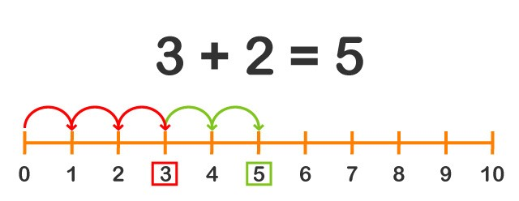

Las sumas y restas son las primeras operaciones matemáticas que aprendemos; algunos niños incluso aprenden antes de comenzar la escuela primaria. Aprender a sumar y restar es sencillo, si tenemos en cuenta que a los niños pequeños les cuesta más entender conceptos abstractos que reales: si les mostramos cuatro manzanas y luego añadimos una explicando que ahora son cinco, lo entenderán mejor que si decimos 4+1 es igual a 5.
Vamos a comenzar desde lo muy básico, para luego pasar a operaciones de sumas y restas llevando; vamos a explicarlo todo paso a paso.
Sumas
Sumar es juntar dos o más cosas en un grupo, para saber cuántas hay en total.
Si tengo 2 manzanas verdes y 3 manzanas rojas, y quiero saber cuántas manzanas tengo en total, junto todas las manzanas en un solo cesto y las cuento: tengo 5 manzanas en total, por lo tanto 2 + 3 es igual a 5.
También podemos representar la suma en la línea de números, e ir saltando de un número a otro para hacer la suma.
Por ejemplo:

Un pajarito salta hasta el número 3. Luego hace otros 2 saltos, y llega al número 5. Por lo tanto, 2 + 3 es igual a 5.
Los números que se suman dentro de una operación se llaman SUMANDOS
Restas
Restar es quitar una cierta cantidad a otra que ya teníamos
Veamos un ejemplo:
Si tengo 5 manzanas en una cesta, y quito 2, dentro de la cesta me quedarán 3 manzanas. es decir que 5 menos 2 es igual a 3.
Como hemos visto con las sumas, también podemos usar la línea de números para restar.
Por ejemplo:
Un pajarito hace 5 saltos y llega al número 5, luego hace 2 saltos hacia atrás, y por lo tanto llega al número 3.
En una resta, el primero de los dos números que intervienen y es la cantidad de la que debe restarse otra se llama MINUENDO. El segundo número que debe restarse al primero se llama SUSTRAENDO.
Sumas y restas con llevada
Hasta ahora hemos hechos sumas y restas sencillas, sin superar con el resultado el número 10. ¿Pero qué pasa cuando tenemos que sumar números de dos o más dígitos? Para poder hacer este tipo de operaciones primero tenemos que aprender a sumar y restar en vertical.
Sumas y restas en vertical
Para sumar o restar en vertical, tenemos que encolumnar los números de la operación alineando las unidades con las unidades, las decenas con las decenas, etc:
Ahora ya podemos hacer la operación.
Se suman o restan siempre los números de la misma columna: unidades con unidades, decenas con decenas, etc.
Se comienza siempre por la columna de las unidades, y se va avanzando hacia la izquierda.
Veamos nuestro ejemplo:
Pero hay casos en los que el resultado de la suma de una columna es más de 9 (por ejemplo 24+37, el resultado de la columna de las unidades es 11), o en el caso de una resta, el primer número de la columna es menor al que tenemos que restar (por ejemplo 23-17, 3 es menor que 7). En estos casos ¿cómo se hace? Llegó el momento de hablar de las sumas y restas con llevada.
Sumas llevando
Cuando al sumar los números de una columna nos sale un número mayor de 9, no podemos escribir dos cifras en una misma columna. Si nos encontramos ante este caso, vamos a utilizar la llevada.
Vamos a verlo con un ejemplo: 45+7
Al sumar el 5 y el 7 nos da 12, un número de dos cifras. Como no podemos escribir los dos números en la columna de las unidades, separamos las decenas de 12, dejando el 2 en las unidades y pasando la decena a su columna correspondiente:
Si nuestra suma tuviera más cifras (centenas, etc.) seguimos con el mismo método, siempre de derecha a izquierda.
Restas llevando
En ocasiones, el número del minuendo es menor al del sustraendo. En este caso tendrá que pedir ayuda a la cifra del minuendo de la siguiente columna para poder hacer la resta. Por ejemplo: para restar 23-17, ponemos los números en columna y comenzamos por la columna de la unidad. Vemos que el 3 es menor que el 7, por lo que no podemos restarlo tal cual. Entonces el 3 le pide prestada una decena a la columna siguiente. La columna de la decena le presta una (2-1), y el 3 entonces puede sumar 10 unidades (10+3).
Ahora si puedes restar 13 – 7: el resultado de la columna de las unidades es 6.
Cuando se pasa a la columna de las decenas, tenemos que acordarnos que el minuendo prestó una decena, así que tiene una menos: ya no será 2-1, sino 1-1.